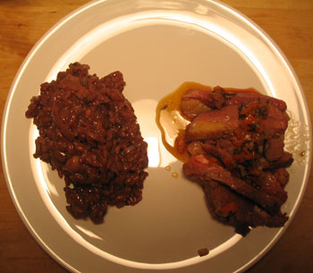

Duck breast and red wine risotto
Last night I made a dinner full of interesting textures and flavors. I was originally just going to make duck, which I had been meaning and planning to do for, oh, about a year. Then I came across an Amanda Hesser recipe for red wine risotto at wednesdaychef, and I thought that would be a good accompaniment. Turns out I was right:

I know that everything on the plate is purple. Actually it all looks brown in the photo. Monochromaticity aside, however, this plate was a hit. I didn’t know what I would make to go with the duck originally, and I love to come across a recipe for which I have all of the ingredients on hand. Of course I have red wine, arborio rice, and parmesan cheese, and it was a happy coincidence that I had a few cups of homemade chicken stock. Eating this risotto is like eating red wine. It makes your toes curl, and if you don’t like red wine, it will make you sick.
The duck was good too, but have any of you made duck? It’s weird. Sometimes it feels like making chicken, because you’re thinking about how it’s a bird, but the recipe keeps telling you it should be rare, so then it’s like beef. And it has this centimeter-thick layer of fat on top of it that acts like bacon and makes an enormous amount of grease. Anyway, I got the recipe from this cute book at work called Pedaling through Burgundy, part of a series written by Sarah Leah Chase, a woman who rode her bike around France and wrote some books about it. It involved roasting a duck breast for about 15 minutes in a 450°F oven with minced shallot, carrot, and rosemary, and then making a pan sauce with the drippings and beef stock. (I was told to “fan out” the slices of meat, but I don’t have the patience for that, especially without a good slicing knife.)
So this duck was all fine and dandy, but am I supposed to eat all that fat on the plate? I like the taste of the rare duck, but I can’t abide all the blubber. If I don’t eat it, do I throw it away? Or do I melt it and then cook with it? Last question: all of these pan sauce recipes have me strain and discard the solids, in this case the shallot, carrot, and rosemary. Is there any reason I can’t disobey that directive? I think the oft-discarded solids are the tastiest part of the dish, and I gleefully sprinkled them all over my magret!
Comments
“especially without a good slicing knife” ? Does it ever end, MrLittlePants? Next week it’s going to be, “I just can’t make this pasta without living in a Tuscan villa for a week and bathing myself in grappa.” Ew!
Slicing knife. Psh. All in good time, my pretty, all in good time.
I’d like to see you try to slice a tender duck breast with a serrated edge!
What’s wrong with your new global knife? I’m sure that would have sliced the hell out of that duck!! Personally I am not fond of rare duck, trendiness be damned. And I agree that the bits in the pan can be very tasty and I am also loath to discard them, tending to scarf them down in the kitchen when no one else is looking. I’m not big on straining sauces, kind of liking the look and texture of bits in my sauces. More rustic. I’m sure peasants and country cooks in Europe aren’t in their kitchens with strainers and never have been! Wasteful, if nothing else.
Mommy
You are right: the risotto is just like eating red wine. Well said.
As for duck fat, if you’ve never had oven-roasted potatoes in duck fat you’re in for a treat. Try to find duck recipes in which you roast or fry out a lot of the fat into a pan. Pour that liquid gold into a container and it will solidify. Use this whenever you make roasted potatoes. It’s out of this world (and incidentally, duck fat is very expensive when buying it from a store, so “making” your own is economical as well as delicious).
That’s a good idea! When I make the other breast I’ll keep the fat. A friend of mine likes to rub her chickens with it before roasting.
Now I want to roast a duck just for the fat! It sounds even more delicious than schmaltz (chicken fat), another underutilized fat in today’s kitchen.
Yeah I look forward to exploiting my remaining frozen duck for its fat. We’re so barbaric!
Add a comment